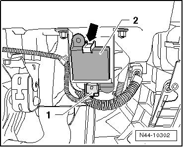

Left Rear Tire Pressure Monitoring Transmitter
Left Rear Tire Pressure Monitoring Transmitter
Removing
The left rear tire pressure monitoring transmitter (G433) is installed in the wheel housing liner opposite the direction of travel.
- Switch ignition off.
- Remove wheel housing liner.
- Disconnect connector - 1 -.

- Raise the retainer - arrow - and remove the left rear tire pressure monitoring transmitter (G433) - 2 -.
Installing
- Insert the left rear tire pressure monitoring transmitter (G433) in the bracket.
Make sure the retainer - arrow - engages in front of the left rear tire pressure monitoring transmitter (G433) - 2 -.
- Connect harness connector - 1 -.
- Install wheel housing liner.